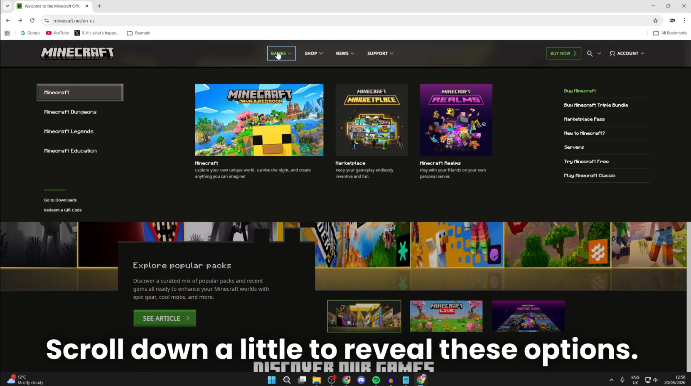
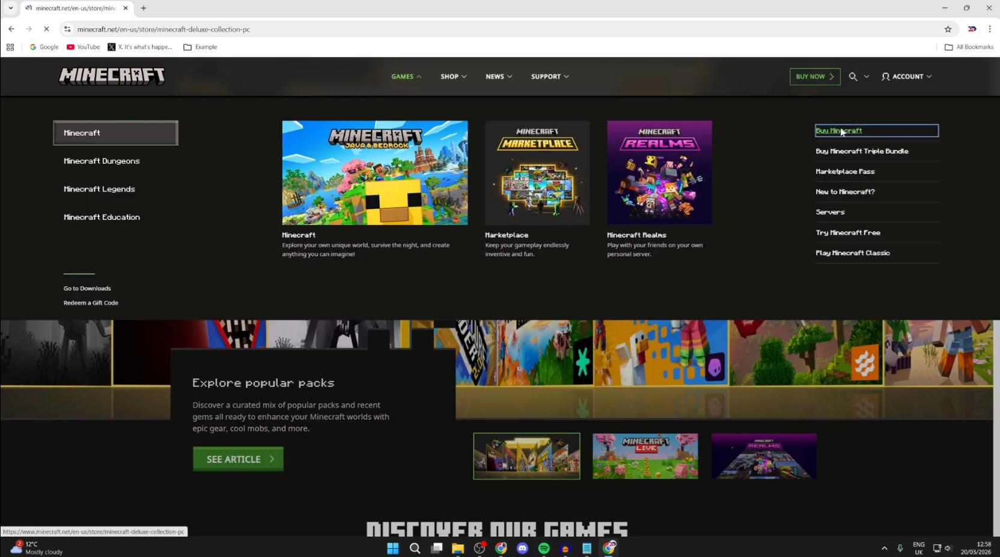
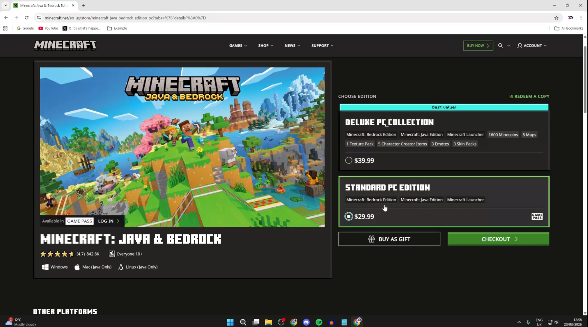
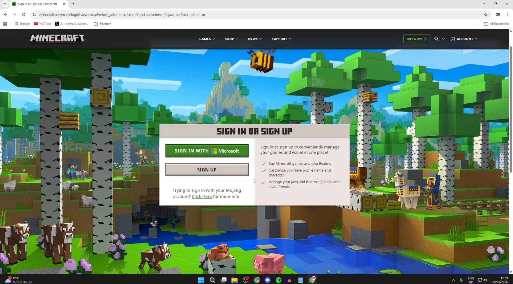
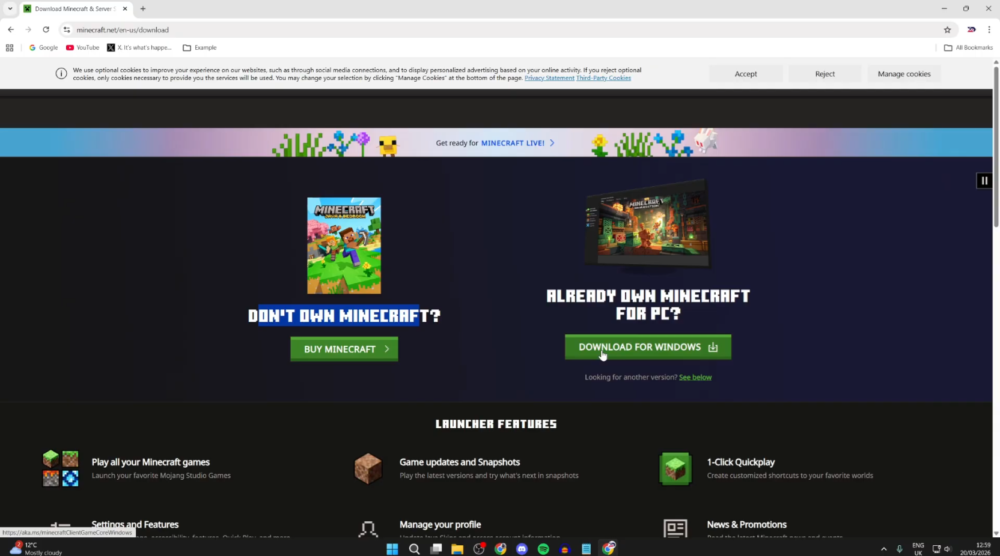
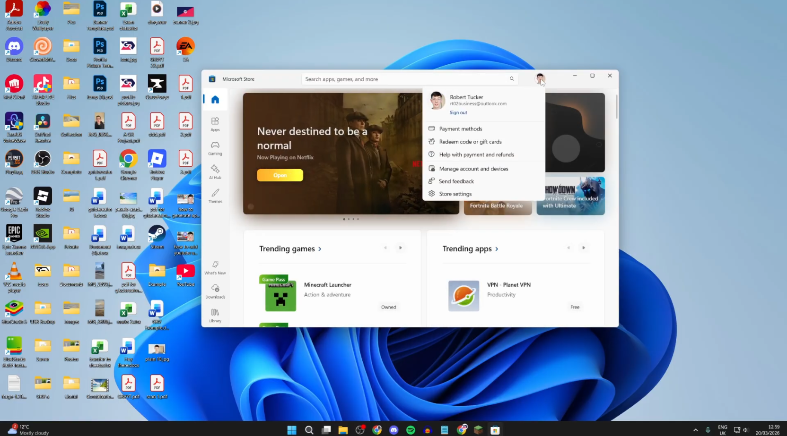
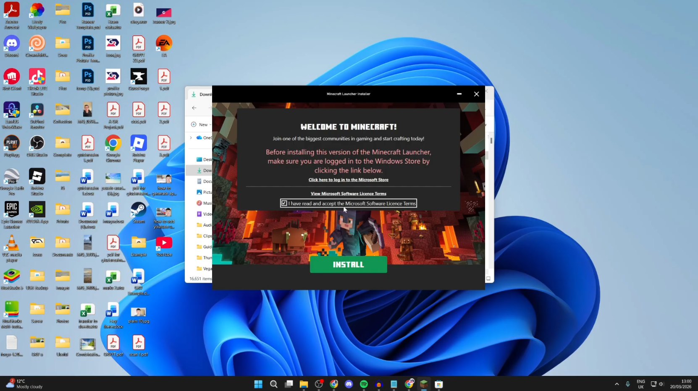
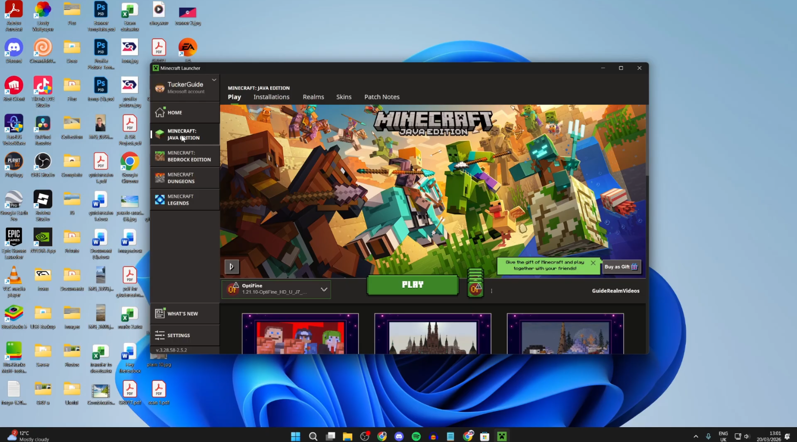
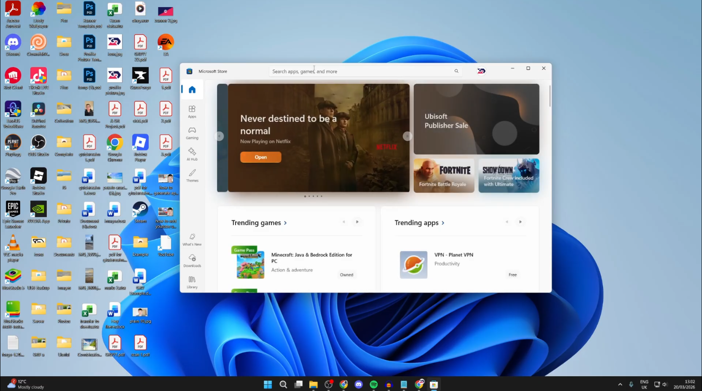
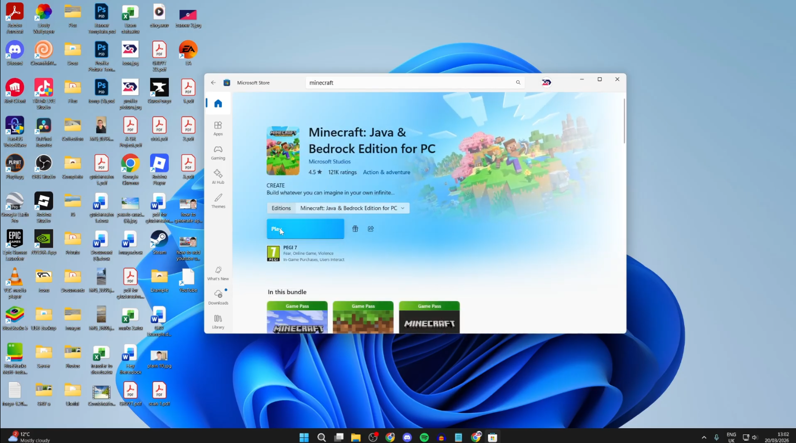

How to Download
Minecraft on PC
— Java &
Bedrock
What you need to know first
Minecraft isn't free — it's a one-time purchase. That single purchase covers Minecraft Java Edition (the classic PC version loved by modders) and Minecraft Bedrock Edition (for cross-play with console and mobile). You'll also need a Microsoft account since your license is tied to it. If you don't have one, it's free to create.
1 Download via Minecraft.net
The most direct way to get Minecraft on your Windows PC or computer.
Open any browser, head to minecraft.net, click Games in the top nav, then hit Buy Minecraft.



Both include Java + Bedrock + the launcher. Deluxe adds bonus content. Select one and click Check Out.

Your Minecraft license lives on your Microsoft account. Sign in or create one during checkout — you'll need this same account later.

After purchase, scroll to the bottom → Support → Download → Download for Windows. The file MinecraftInstaller.exe lands in your Downloads folder.

Press the Windows key, search Microsoft Store, and make sure you're signed in with the same account you used to buy Minecraft. If not, sign out and sign back in.

Open File Explorer → Downloads → double-click MinecraftInstaller.exe → click Install. Windows may run an update first — just wait it out.

The Minecraft Launcher opens automatically. Pick Java Edition or Bedrock Edition on the left sidebar, choose the latest release, and click Play. It'll download what it needs and launch.

2 Get it via the Microsoft Store
Already on Windows? Skip the browser entirely — the Microsoft Store has the Minecraft Launcher built-in and lets you buy it too.
Press the Windows key, type Microsoft Store, and open it.

Type Minecraft in the search bar. You'll see the Minecraft Launcher listed — with a Buy button if you haven't purchased yet.
Click Get or Install. Once done, open the launcher, sign in with your Microsoft account, pick your edition, and play.

FAQs
Yes — any Windows laptop works. The install process is identical to a desktop PC. For smooth Java Edition gameplay, 8GB RAM is recommended.
Yes. Your Minecraft license is tied to your Microsoft account. You'll sign in to the launcher with it every time you play.
It's a one-time purchase — no subscription. Check minecraft.net or the Microsoft Store for the current price in your region.
Yes, but only on Bedrock Edition. Switch to Bedrock in the launcher and you can join friends on Xbox, PlayStation, Switch, and mobile.
Java is PC-only with deep mod support and the biggest community. Bedrock is cross-platform. One purchase gets you both on Windows.
That's everything. Whether you're on a desktop or laptop, getting Minecraft on Windows takes less than 10 minutes. Pick your method above and you'll be building (or surviving) in no time.